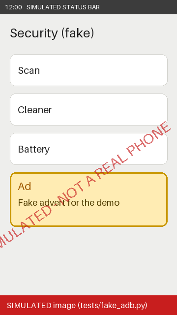
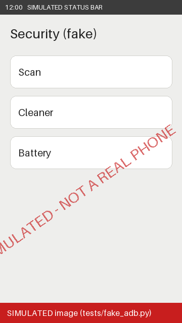
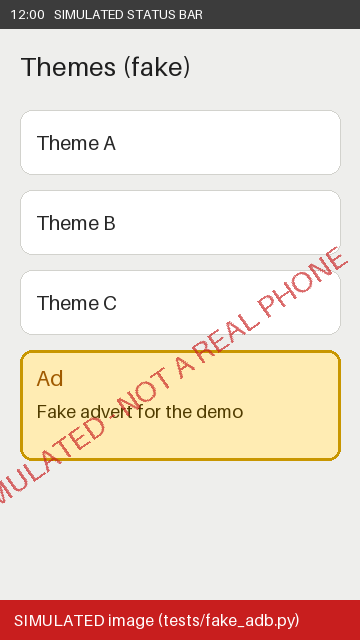
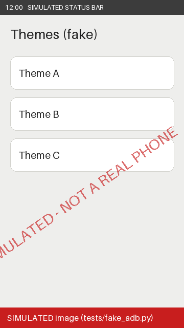

AdReceipts receipts
Xiaomi SIMULATED-PHONE, Android 16, system OS3.0.301.0.SIMULATED - 2026-11-02T16:50:42+00:00
Experimental. Not yet tested on a real device. Use at your own risk and back up your data first.
How to read this page. Each pair shows what was observed on one screen before and after the change, with the exact change underneath. A receipt only reports what was seen; it never says an ad is gone for good. Images, if any, are stored only on this computer.
Summary
Phone family: Xiaomi SIMULATED-PHONE, Android 16, system OS3.0.301.0.SIMULATED. Before: scan of 2026-11-02T16:50:41+00:00. After: 2026-11-02T16:50:42+00:00.
A receipt says only what was observed. A location where no ad was seen before is 'not proven', never 'removed'. A screen without an ad at one moment does not prove the ad is gone for good.
How to read the results
| Result | Meaning |
|---|---|
| An ad was seen before; after the change no ad words were found on that screen. | |
| still seen | An ad was seen before and is still seen. |
| not proven | No ad was seen before (or the screen was not checked), so nothing can be proven. |
| not checked | The screen was not checked after the change. |
Screens checked before and after
Security app recommendations - result: ad not seen after change


- Exact change: none aimed at this location. Changes made in this run: batch 1: disabled com.miui.analytics; batch 1: disabled com.miui.android.fashiongallery; batch 1: disabled com.miui.msa.global
- How to turn it off by hand: Open the Security app. Tap the gear icon at the top right. Turn off 'Receive recommendations' (also called 'Show recommendations').
Ads in the Themes app - result: ad not seen after change


- Exact change: none aimed at this location. Changes made in this run: batch 1: disabled com.miui.analytics; batch 1: disabled com.miui.android.fashiongallery; batch 1: disabled com.miui.msa.global
- How to turn it off by hand: Open the Themes app. Tap your account icon at the bottom right, then the gear icon. Turn off 'Show ads' and 'Personalized recommendations'.
Other ad locations (no screen evidence)
| Location | Result | Before | After | Exact change |
|---|---|---|---|---|
| Google advertising ID | not proven | not checked | not checked | none aimed at this location. Changes made in this run: batch 1: disabled com.miui.analytics; batch 1: disabled com.miui.android.fashiongallery; batch 1: disabled com.miui.msa.global |
| System ads service (msa) | not proven | not checked | not checked | batch 1: disabled com.miui.msa.global |
| Personalized ad recommendations | not proven | not checked | not checked | none aimed at this location. Changes made in this run: batch 1: disabled com.miui.analytics; batch 1: disabled com.miui.android.fashiongallery; batch 1: disabled com.miui.msa.global |
| Cleaner recommendations | not proven | not checked | not checked | none aimed at this location. Changes made in this run: batch 1: disabled com.miui.analytics; batch 1: disabled com.miui.android.fashiongallery; batch 1: disabled com.miui.msa.global |
| Ads in the Downloads app | not proven | not checked | not checked | none aimed at this location. Changes made in this run: batch 1: disabled com.miui.analytics; batch 1: disabled com.miui.android.fashiongallery; batch 1: disabled com.miui.msa.global |
| Ads in the Music app | not proven | not checked | not checked | none aimed at this location. Changes made in this run: batch 1: disabled com.miui.analytics; batch 1: disabled com.miui.android.fashiongallery; batch 1: disabled com.miui.msa.global |
| Recommendations in Mi Video | not proven | not checked | not checked | none aimed at this location. Changes made in this run: batch 1: disabled com.miui.analytics; batch 1: disabled com.miui.android.fashiongallery; batch 1: disabled com.miui.msa.global |
| Ads in Mi Browser | not proven | not checked | not checked | none aimed at this location. Changes made in this run: batch 1: disabled com.miui.analytics; batch 1: disabled com.miui.android.fashiongallery; batch 1: disabled com.miui.msa.global |
| App suggestions in the app drawer | not proven | not checked | not checked | none aimed at this location. Changes made in this run: batch 1: disabled com.miui.analytics; batch 1: disabled com.miui.android.fashiongallery; batch 1: disabled com.miui.msa.global |
| Suggested apps in home screen folders | not proven | not checked | not checked | none aimed at this location. Changes made in this run: batch 1: disabled com.miui.analytics; batch 1: disabled com.miui.android.fashiongallery; batch 1: disabled com.miui.msa.global |
| Lock screen Wallpaper Carousel | not proven | not checked | not checked | batch 1: disabled com.miui.android.fashiongallery |
| App Vault panel | not proven | not checked | not checked | none aimed at this location. Changes made in this run: batch 1: disabled com.miui.analytics; batch 1: disabled com.miui.android.fashiongallery; batch 1: disabled com.miui.msa.global |
Packages, before and after
| Package | Before | After | Change made by AdReceipts |
|---|---|---|---|
com.android.providers.downloads.ui | enabled | enabled | none |
com.android.thememanager | enabled | enabled | none |
com.mi.globalbrowser | enabled | enabled | none |
com.mi.globalminusscreen | enabled | enabled | none |
com.miui.analytics | enabled | disabled | batch 1: disabled com.miui.analytics |
com.miui.android.fashiongallery | enabled | disabled | batch 1: disabled com.miui.android.fashiongallery |
com.miui.daemon | enabled | enabled | none |
com.miui.hybrid | enabled | enabled | none |
com.miui.msa.global | enabled | disabled | batch 1: disabled com.miui.msa.global |
com.miui.player | enabled | enabled | none |
com.miui.securitycenter | enabled | enabled | none |
com.miui.videoplayer | enabled | enabled | none |
Undo
- Undo everything: python adreceipts.py restore --all
- Undo one batch: python adreceipts.py restore --batch <ID>
- Without Python: run restore-standalone.cmd (Windows) or restore-standalone.sh in this folder.
What this does not prove
- A screen without an ad at one moment does not prove ads are gone for good.
- This covers ads built into the phone's own apps and screens. It does not remove ads inside other apps or YouTube.
- A DNS filter, if you choose one, blocks some ad domains, not all ads.
- No speed, battery or memory gains are claimed.